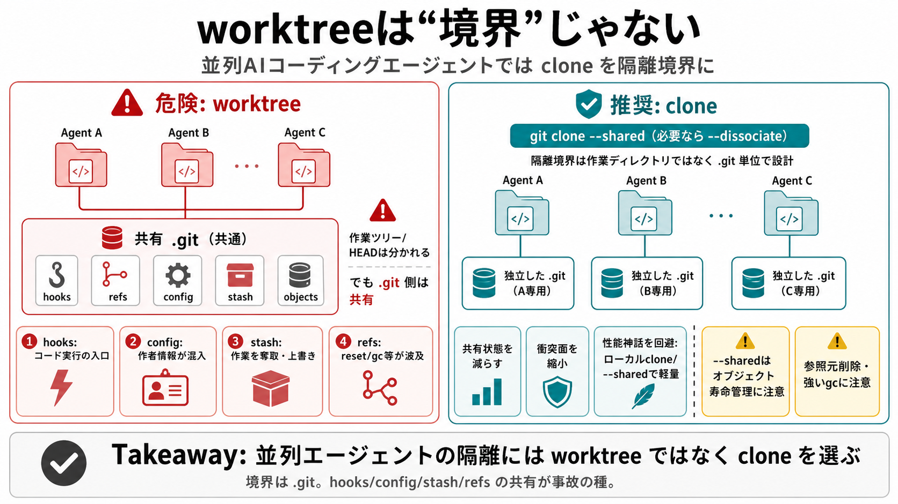

Git worktrees are not an isolation boundary for coding agents | Hacker News
| | | alchaplinsky 38 minutes ago | prev | next (javascript:void(0)) Worktrees are the obvious pick, and I get why.…

隔離したいなら clone（特に --shared） を選ぶべき、という主張が中心です。
worktreeで作業ディレクトリやHEADは分かれるはず。
共有される .git の中身が隔離にならない。
作業ツリー、HEAD/index、チェックアウト先の状態など。
objects、refs、config、stash、hooks。
共通の実行入口。書き換えが危険。
ブランチや参照の共有。更新が波及。
作者情報や退避が混入・衝突し得る。
hooksは“コミット等のトリガー”なので、隔離したはずのエージェントがホスト上でコード実行を誘発し得る点が致命的です。
エージェント用の設定で完結。
共有configを通じて利用者リポジトリへ影響。
退避スタックの共有で、復元先がズレる。
意図しない差分の適用・作業損失。
branch -f / reset --hard
git gc / 参照の削除
性能ではなく“隔離境界の正しさ”を優先する、という方向性です。
共有される状態が減り、衝突面を縮小。
完全無条件ではない（オブジェクト寿命など）。
参照元が削除されると不整合の余地。
強い gc が巻き込む可能性。
--dissociate 等で独立させる余地。
並列エージェントの隔離境界は worktree ではなく clone（特に --shared、必要なら dissociate）として設計する。
| | | alchaplinsky 38 minutes ago | prev | next (javascript:void(0)) Worktrees are the obvious pick, and I get why.…
# Git Worktrees: What They Actually Are and Why They Beat Stashing March 13, 2026 • 8 min read • programming, tools,…
> > I'm aware of local git clone solutions (the default, which is to hardlink shared objects, and the `--shared` option,…
Instead of cloning, you can create worktrees: # In your main repo git worktree add ../feature-branch feature-branch git …
| --- slug: replacing-my-custom-git-worktree-skill-with-claude-code-hooks published: 2026-02-24 If you've been followi…